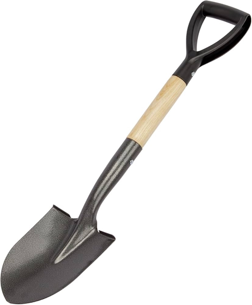

Did you know that spoons and shovels are basically cousins in the world of tools? Both share the same scooping design, but while a spoon is your dining companion for soup or cereal, the shovel is its oversized relative built to move mountains of dirt, sand, or snow. In fact, archaeologists have found ancient spoons carved from wood and bone that look strikingly similar to miniature shovels, showing that humans have been using this “scoop and carry” design for thousands of years—it’s one of the simplest yet most enduring inventions across cultures.